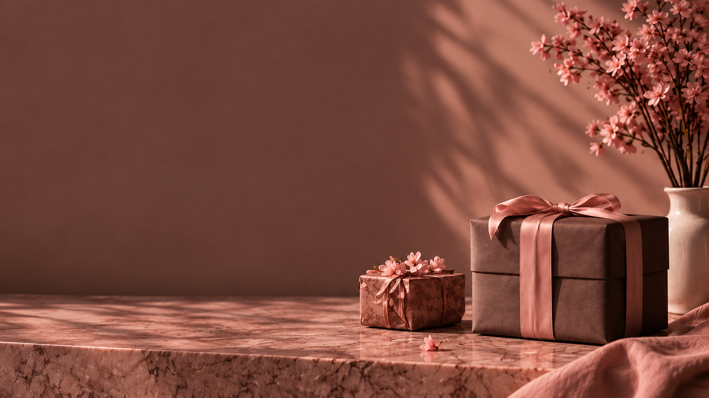

Limited
Discoveries
Rare objects. Exclusive access.
For those who seek more.
Thoughtful pieces.
Brighter days.
The Autumn Drop
Curated pieces from exceptional
houses, available for a limited time.

Rare objects. Exclusive access.
For those who seek more.
Thoughtful pieces.
Brighter days.
Curated pieces from exceptional
houses, available for a limited time.